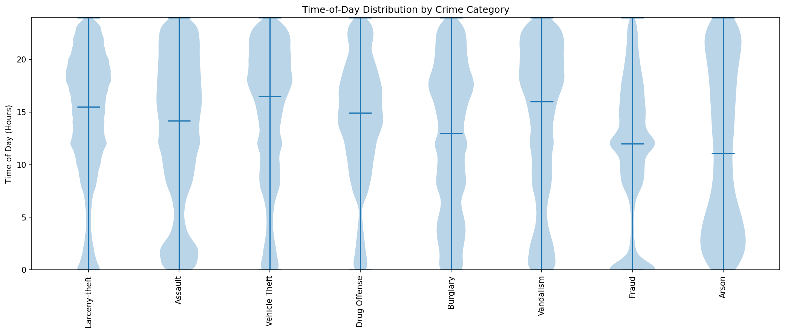

San Francisco by the numbers
[PLACEHOLDER — Introduce the dataset. The data comes from the San Francisco Police Department's public incident reports, published via DataSF. The dataset covers 2003–2025 and contains eight crime categories: Assault, Fraud, Burglary, Vandalism, Larceny-theft, Vehicle Theft, Drug Offense, and Arson. Explain in one sentence why these particular categories were selected — they represent the "personal focus crimes" tracked consistently by SFPD across the entire 22-year period.]
[PLACEHOLDER — Frame the central question: Does the time of day you are out on the streets of San Francisco change how safe you are? The answer, as this analysis shows, is a resounding yes — but the story is more nuanced than simply "night is dangerous." Different crimes peak at radically different hours, and knowing the pattern reveals something meaningful about the social forces driving each type of offense.]
Not all crimes keep the same hours
[PLACEHOLDER — Introduce the violin plot's main finding. Each crime category has a distinct "daily fingerprint." Larceny-theft — the city's most common crime by far — is concentrated in the midday and early afternoon, when commercial streets and transit hubs are at their busiest. Assault, by contrast, is overwhelmingly a late-night phenomenon, with its distribution peaking between midnight and 2am. Drug offenses show the flattest, most uniform spread across the day, suggesting they are less tied to routine activity patterns than other crime types.]
[PLACEHOLDER — Note the most surprising finding from the violin plot. Arson has a striking secondary peak in the early morning hours (around 2–4am) that no other crime shares — a pattern consistent with deliberate, premeditated incidents carried out when streets are empty and detection is least likely. Vehicle theft similarly skews toward late night and early morning, when cars sit unattended for hours at a stretch.]
[PLACEHOLDER — Lead the reader into Figure 1. Describe what a violin plot shows for a reader who may not be familiar with the format: the width of the shape at any given hour represents how many incidents occurred at that time, averaged across 2003–2025. The wider the violin at a particular hour, the more incidents were recorded then.]

Figure 1 · The daily fingerprint of crime. [CAPTION PLACEHOLDER — Each violin shows the distribution of incidents across the 24-hour day for one crime category, aggregated across all 22 years (2003–2025). The width of the violin at any given hour is proportional to the number of incidents recorded at that time. Notice how Larceny-theft (the city's most common crime) is concentrated in the midday hours — a daytime, opportunity-driven pattern closely tied to foot traffic in commercial areas. Assault clusters sharply in the late-night window past midnight. Arson stands out with a distinctive pre-dawn peak (2–4am), consistent with deliberate acts carried out when streets are empty and the chance of being seen is lowest.]
The city transforms hour by hour
[PLACEHOLDER — Introduce the geographic dimension of the time-of-day story. It is not just which crimes happen at different hours — it is also where they happen. The Financial District is a hotspot for Larceny-theft between 10am and 3pm, when office workers and tourists crowd the sidewalks and transit stations, but it empties of crime almost entirely after dark. The Tenderloin, by contrast, sees elevated activity around the clock, with Assault and Drug Offense incidents distributed throughout the day and night alike.]
[PLACEHOLDER — Describe how to use the interactive map. The reader can select any hour of the day using the slider, and filter by crime category using the dropdown. This lets them "watch" the city's crime geography shift as the day progresses — from the Financial District larceny hotspot at noon, to the Mission and Tenderloin assault clusters that dominate after midnight. Encourage the reader to try a specific comparison, e.g. Larceny-theft at 1pm vs. Assault at 1am.]
Figure 2 · Crime across the city, hour by hour. [CAPTION PLACEHOLDER — This interactive map plots incident locations recorded across San Francisco between 2003 and 2025. Use the time-of-day slider to step through the 24-hour cycle, and the category dropdown to focus on a specific crime type. Each point represents a cluster of incidents recorded at that hour. The map reveals that crime is far from evenly distributed: the Tenderloin and Mission districts remain persistently active regardless of the hour, while the Financial District and Union Square show a stark daytime-only pattern driven almost entirely by Larceny-theft. Select "Larceny-theft" at noon, then switch to "Assault" at 1am to see the two-shift pattern play out geographically.]
A rhythm that outlasts pandemics, booms, and policy shifts
[PLACEHOLDER — Introduce the third visualization. The time-of-day fingerprint from Sections 1 and 2 is not a recent phenomenon — it has been a defining feature of SF crime across the entire 22-year period. But the shape of the daily distribution has not been perfectly static. The COVID-19 lockdowns of 2020 compressed crime into a narrower band of hours: nightlife shut down, commuting stopped, and the late-night Assault peak shrank dramatically. The post-pandemic rebound saw nighttime crime recover faster than its daytime counterpart. This chart lets the reader explore how each crime category's hourly profile shifted year by year.]
[PLACEHOLDER — Note a policy-linked shift if visible. Drug offenses declined sharply after California's Proposition 64 legalized cannabis in 2016 — and the decline was especially pronounced in the evening hours, when street-level drug markets had historically been most active. The clock chart makes this change visible as the shape of the Drug Offense ring narrows and loses its evening peak after 2016.]
[PLACEHOLDER — Guide the reader into Figure 3. Explain how to use the polar clock: select a crime category from the dropdown, then press Play to watch the 24-hour shape animate year by year. A perfectly round clock means crime is evenly spread across all hours; a lopsided shape reveals a strong time-of-day preference.]
Controls: crime category
dropdown + Play/Pause animation by year (2003–2025).Export:
fig.write_html('Visualizations/fig3_clockchart.html', include_plotlyjs='cdn')Embed: replace this block with
<iframe src="Visualizations/fig3_clockchart.html" class="fig-iframe">
Interactive Polar Clock · Hourly Crime Profile Animated by Year
See dev note above · Visualizations/fig3_clockchart.html
Figure 3 · The 24-hour clock of crime, animated. [CAPTION PLACEHOLDER — This polar bar chart arranges the 24 hours of the day in a clockface: midnight at the top, noon at the bottom. Each wedge's length encodes the number of incidents in that hour. Select a crime category from the dropdown, then press Play to animate year by year from 2003 to 2025. The stability of Larceny-theft's midday spike is striking — it persists virtually unchanged across two decades. Assault tells a different story: its late-night wedges (10pm–3am) collapse during 2020 as COVID lockdowns shut down San Francisco's nightlife, then slowly recover through 2022–2023. Drug Offense shows perhaps the most dramatic long-term shift — its previously near-circular profile grows increasingly uneven after 2016, reflecting the consolidation of remaining street markets into fewer active hours following cannabis legalisation.]
Time is the hidden variable in San Francisco's crime story
[PLACEHOLDER — Synthesis. The three visualizations together make a single argument: crime in San Francisco is deeply rhythmic. The hour of the day is one of the strongest predictors of both what kind of crime is likely and where in the city it is likely to happen. Larceny-theft — the dominant crime by volume — is a creature of commerce and daylight, following foot traffic and business hours. Assault is a creature of the night economy, following bars, clubs, and the social tensions that accompany them. These are not random distributions; they are the statistical shadow of the city's social life.]
[PLACEHOLDER — Limitations. Note that reported crime is not the same as all crime: under-reporting varies by crime type and neighborhood. Drug offenses in particular are sensitive to policing intensity rather than just underlying behavior. The patterns here reflect what police recorded, not necessarily the full picture. Nonetheless, with over a million incidents across 22 years, the time-of-day signal is consistent enough to be meaningful — and actionable.]
References & Further Reading
- San Francisco Police Department (2024). Incident Reports 2018–Present. DataSF Open Data Portal.
- San Francisco Police Department (2024). Incident Reports 2003–2017. DataSF Open Data Portal.
- [PLACEHOLDER — Routine Activity Theory reference, e.g. Cohen & Felson (1979) or a criminology textbook chapter on time-of-day crime patterns]
- [PLACEHOLDER — News or research source on the Tenderloin / Mission crime geography, e.g. SF Chronicle or Mission Local reporting]
- [PLACEHOLDER — Source on COVID-19's effect on nighttime crime and nightlife shutdowns in US cities, 2020–2021]
- [PLACEHOLDER — California Proposition 64 (Adult Use of Marijuana Act, 2016) and its measured effect on drug offense rates in SF]
- Segel, E. & Heer, J. (2010). Narrative Visualization: Telling Stories with Data. IEEE Transactions on Visualization and Computer Graphics, 16(6).